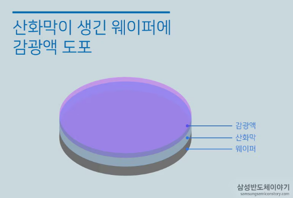

1. 개요
- 산화공정 이후의 Wafer에 반도체 회로를 그려 넣는 공정
- Wafer 위에 회로 패턴이 담긴 마스크 상을 빛을 이용해 비춰 회로를 그리기 때문에 Photo Lithography라는 이름이 붙여짐
- 패턴을 형성하는 방법은 흑백 사진을 만들 때, 필름에 형성된 상을 인화지에 인화하는 것과 유사함
- 반도체는 집적도가 증가할수록 칩을 구성하는 단위 소자 역시 미세 공정을 사용해 작게 만들어야 함
- 미세 회로 패턴 구현은 포토 공정에 의해 결정됨(집적도가 높아질수록 포토 공정 기술 수준도 함께 요구됨)
2. 전체 공정 흐름
① 웨이퍼에 회로 패턴을 만드는 준비 단계
- CAD(Computer-aided design)를 이용해 Wafer에 그려 넣을 회로를 설계
- 전자회로 패턴으로 설계되는 이 도면에 엔지니어들이 설계한 정밀회로를 담으며, 그 정밀도가 반도체의 집적도를 결정
② 사진 원판의 역할을 하는 포토마스크 만들기

- 포토마스크(Photo Mask) : 설계된 회로 패턴은 순도가 높은 석영(Quartz)을 가공해서 만든 기판 위에 크롬(Cr)으로 미세 회로를 형상화
- 마스크는 Reticle이라고도 부르는데, 이것은 회로 패턴을 고스란히 담은 필름으로 사진 원판의 기능을 하게 됨
- 마스크는 보다 세밀한 패터닝을 위해 반도체 회로보다 크게 제작되며, 렌즈를 이용해 빛을 축소하여 조사하게 됨
- Blank Mask : IC미세회로가 그려지지 않은 마스크
- 국내 주요 업체
Blank Mask: S&S TECHPhoto Mask: S&S TECH, FST (상용화 단계는 아님)펠리클(Pellicle): FST
③ 감광액 도포

- Wafer 표면에 빛에 민감한 물질인 감광액(PR, Photo Resist)을 골고루 바르는 작업
- 보다 고품질의 미세한 회로 패턴을 얻기 위해서는 감광액(PR) 막이 얇고 균일해야 하며 빛에 대한 감도가 높아야 함
- 국내 주요 업체
감광액 : 동진세미켐감광액 원료 : 이엔에프테크놀로, Purit위 업체들은 감광액 이외에도 식각 공정에 사용되는 여러가지 화학물질 제작
④ 노광 공정

- 노광(Stepper Exposure) : 감광액 막을 형성한 Wafer위에 노광장비를 사용해 회로 패턴이 담긴 마스크에 빛을 통과시켜 회로를 찍어내는 공정
- 반도체 공정에서의 노광은 빛을 선택적으로 조사하는 과정
- 대표적인 EUV 장비 제조 회사 = ASML (네덜란드)
⑤ 현상 공정

- 웨이퍼에 현상액을 뿌려 가며 노광된 영역과 노광 되지 않은 영역을 선택적으로 제거해 회로 패턴을 형성하는 공정
- 포토공정의 마지막 단계로 일반 사진을 현상하는 과정과 동일하며, 패턴의 형상이 결정되기 때문에 매우 중요함
⑥ 검사
- 각종 측정 장비와 광학 현미경 등을 통해 패턴이 잘 그려졌는지 검사를 진행